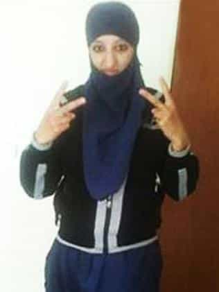

< < < Back
Who Cares If Islamic State Bride Samra Kesinovic Was Killed For Trying To Escape? – Return Of Kings
Bosnian-Austrian teenager Samra Kesinovic, 17, has reportedly been beaten to death for trying to flee the ISIS stronghold of Raqqa in Syria. You may remember Kesinovic and her friend, fellow teen Sabina Selimovic, for their calculated journey from a leafy European suburb to the Middle East in order to become jihadi brides and ISIS recruiters.
Although media outlets are treading cautiously, the tone of many articles, at a time when bigger issues like the downing of a Russian plane by Turkey should be explored, is so far either sympathetic or non-condemnatory of the once proud terrorism poster girl.
With the entry of well-equipped and determined Russian military units into the conflict with ISIS, jihadist-held areas have come under increasing bombardment and their hegemony across many districts is now tenuous at best. Coupled with symbolic Western strikes such as the lethal drone attack on public executioner Jihadi John, it is obvious that many Western-born or raised jihadi girls are becoming scared.
Many will have already died from coalition airstrikes if they haven’t been snuffed out yet by either the Syrian army or anti-government rebels. And who should fundamentally care? I don’t. The world is a better place without a pathetic creature like Samra Kesinovic, irrespective of whether she died at the hands of her erstwhile side.
“A change of heart” in the context of a girl whose new home is being regularly bombed speaks of nothing but a cry for self-preservation. Her young age is irrelevant as well. This was not a sympathy-deserving female with Down’s Syndrome, whose now fatal choices came about through something like an IQ deficiency or serious genetic abnormalities. A choice to leave Austria for Syria would have no doubt been dumber if she were 25 and not a teen, but she is responsible for what she did and has paid the price for it.
Poor, “brainwashed” girl

Sabina Selimovic accompanied Kesinovic to Syria. She died months before her friend. And she looked a lot better with Western make-up and Instagram filters.
The vitiation of any and all female responsibility is a common theme in many Return of Kings articles. The story of Samra Kesinovic is no exception. Austrian officials have long blamed an admittedly virulent Bosnian Muslim preacher based in Vienna, Mirsad O., also known as “Ebu Tejma”, for brainwashing Kesinovic and her friend. The brainwashing thesis is a common device to appease the sensitivities of local Muslim communities in Europe but has taken on an especially troublesome form when it comes to female ISIS supporters.
I guess ideas of girl power have their limitations once they pass the threshold of criminal acts and the moral conundrum of backing a group which makes a living off of rape, general murder, and the systematic genocide of those who do not support a certain Sunni Muslim creed.
A combination of global rape culture, so-called violence against women and basic patriarchy arguments makes authorities reluctant to label despicable and narcissistic individuals like Kesinovic as exercisers of unbridled free choice. How can women support a group whose members openly rape other women, most notably non-Muslim ones? How can women join a death cult where they embrace a twisted form of male dominance?
Mainstream politicians, security officials and others cannot face the real answers, so diminished capacity ideas are routinely bandied about to explain the poor, deliberate behavior of female Islamic fundamentalists.
The perils of Muslim immigrant families in the West
Strangely, there are no pictures of Kesinovic and Selimovic around which show their reactions to ISIS beheadings, reports of rape and other crimes.
Both Samra Kesinovic and Sabina Selimovic were born to Bosnian Muslim refugee families in Austria. The do-gooders will certainly cast the blame onto “racist” Austrian society for producing these pampered, middle-class jihadi girls. What they will not acknowledge is that it is a failure of these families to fully integrate in the first place that creates first or second-generation criminal (and terrorist) threats.
In Austria, a country with which I am greatly familiar, the major problem is not with Serbs or other traditionally Christian south-eastern Europeans but ethnic Bosnians and Turks. Cultural infirmities are the root cause here, even when families cease regular observance of their ancestral faith.
And if social disaster is already brewing amongst these European and Eurasian migrant groups, what catastrophe does the mass arrival of millions of Middle Eastern migrants, almost all of them sexually mature young men, portend? The danger is amplified by the continual appeasement of Muslim communities by governments. Mirsad O. and others will be the only scapegoats, a shortsightedness which forgets the deep reach fervently religious Muslim activists have in nominally secular Muslim homes all across Austria and elsewhere.
Prepare for an even weirder twilight zone

Commentators were quick to label Hasna Ait Boulahcen as a pawn in her male cousin’s terrorist games. How could a woman willingly blow herself up for Islam unless she was abused or controlled?
You will notice that few, if any articles chronicling the death of Samra Kesinovic are mentioning the mass rapes of ISIS or other atrocities meticulously committed by its forces. This looks bad in trying to explain, however feebly, Kesinovic and her friend’s sociopathic choice in friends and holiday activities. Journalists, instead of excoriating Kesinovic in death, will assiduously minimize or hide her culpability to retain the image of ISIS as a collection of purely male-inspired and always female-imprisoning monsters.
People may say that her dying from a Western airstrike or, better still, the rifles of Kurdish fighters would have been a more appropriate swan song. I disagree. Irony is the most powerful way to send a message to would-be female morons wanting to emulate two deceased Bosnian-Austrian schoolgirls.
The hand that helps take you into a new world is the same hand that can strangle or throttle you later. In her final moments, Samra Kesinovic maybe sensed this for the first time.
Read More: Understanding The Ideology Behind The Islamic State